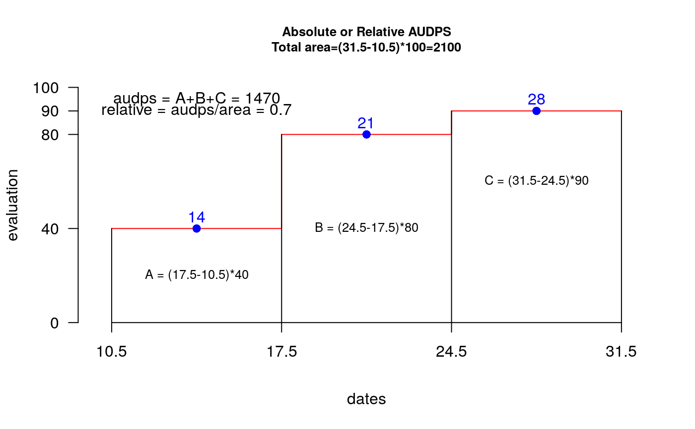

audps.RdA better estimate of disease progress is the area under the disease progress stairs (AUDPS). The AUDPS approach improves the estimation of disease progress by giving a weight closer to optimal to the first and last observations.
audps(evaluation, dates, type = "absolute")
| evaluation | Table of data of the evaluations: Data frame |
|---|---|
| dates | Vector of dates corresponding to each evaluation |
| type | relative, absolute |
AUDPS. For the illustration one considers three evaluations (14, 21 and 28 days) and percentage of damage in the plant 40, 80 and 90 (interval between dates of evaluation 7 days). AUDPS = 1470. The evaluations can be at different interval. AUDPS= sum( rectangle area by interval in times evaluation ) see example.
Vector with relative or absolute audps.
Ivan Simko, and Hans-Peter Piepho, (2012). The area under the disease progress stairs: Calculation, advantage, and application. Phytopathology 102:381- 389.
library(agricolae) dates<-c(14,21,28) # days # example 1: evaluation - vector evaluation<-c(40,80,90) audps(evaluation,dates)#> evaluation #> 1470audps(evaluation,dates,"relative")#> evaluation #> 0.7x<-seq(10.5,31.5,7) y<-c(40,80,90,90) plot(x,y,"s",ylim=c(0,100),xlim=c(10,32),axes=FALSE,col="red" ,ylab="",xlab="")title(cex.main=0.8,main="Absolute or Relative AUDPS\nTotal area=(31.5-10.5)*100=2100", ylab="evaluation",xlab="dates" )#> evaluation #> 1470